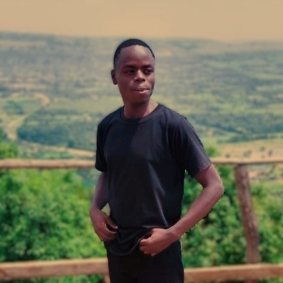

James Wainaina.
I am a goal-oriented, knowledge-thirsty individual who is passionate about modern technology and innovation. My insatiable curiosity drives me to continuously learn and adapt, ensuring I stay ahead in the fast-paced tech landscape.With a focus on solving modern problems through innovative solutions, I strive to make a significant impact using cutting-edge technologies.
About
I am currently pursuing a Diploma in Mechatronics at Meru University, where my academic journey has been marked by a keen interest in the integration of mechanical engineering, electronics, computer science, and systems control. Beyond academics, I take pride in leading the Robotics team at our university. Our team engages in various projects aimed at innovating solutions through robotics technology. My passion lies in bridging the gap between theoretical knowledge and practical applications, especially in the field of robotics.
In addition to my academic pursuits, I have honed my skills in C and C++ programming, applying them to several projects related to the Internet of Things (IoT). These projects have allowed me to explore the potential of IoT in creating smart environments and enhancing connectivity across devices. My experience with IoT has not only deepened my understanding of network communication but also equipped me with the ability to develop efficient and scalable IoT solutions.
Currently, I am expanding my skill set by enrolling in a Software Engineering course at PowerLearn. This initiative is part of my broader goal to become a versatile software engineer capable of tackling complex problems and contributing to innovative technological advancements. Through continuous learning and hands-on experience, I aim to leverage my technical skills and leadership abilities to drive meaningful change in the tech industry.
| School | Years Attended | Grade/Award |
|---|---|---|
| Meru University | Current Enrollment | |
| Gathiruini Boys High School | 2018 - 2021 | B |
| Mugutha Primary School | 2009 - 2017 | 320 |